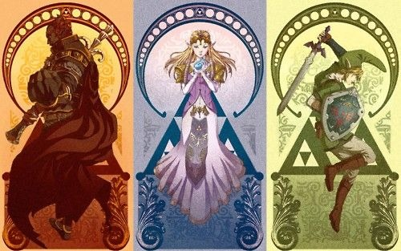
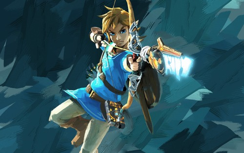

In the game you play as Link, the hero of courage that eventually fights the powerful Ganon to save the wise Zelda to restore peace. This game consists of many puzzles for the player to solve along with difficult bosses. Whenever there is a new game it is because a form of reincarnation has taken place involving the same three characters.
The Legend Of Zelda has had many games throughout the franchises lifetime. Out of all the games that have been released so far one of the best for beginners is The Legend Of Zelda: Breath of the Wild. This game is so highly rated because it allows the player to roam freely as they have many creative tools at their disposal.There is no set way to complete the game and the game encourages the player to be creative with how they navigate the world.
The Legend of Zelda: Tears of the Kingdom is a game that allows Link to use four main abilities to explore the world